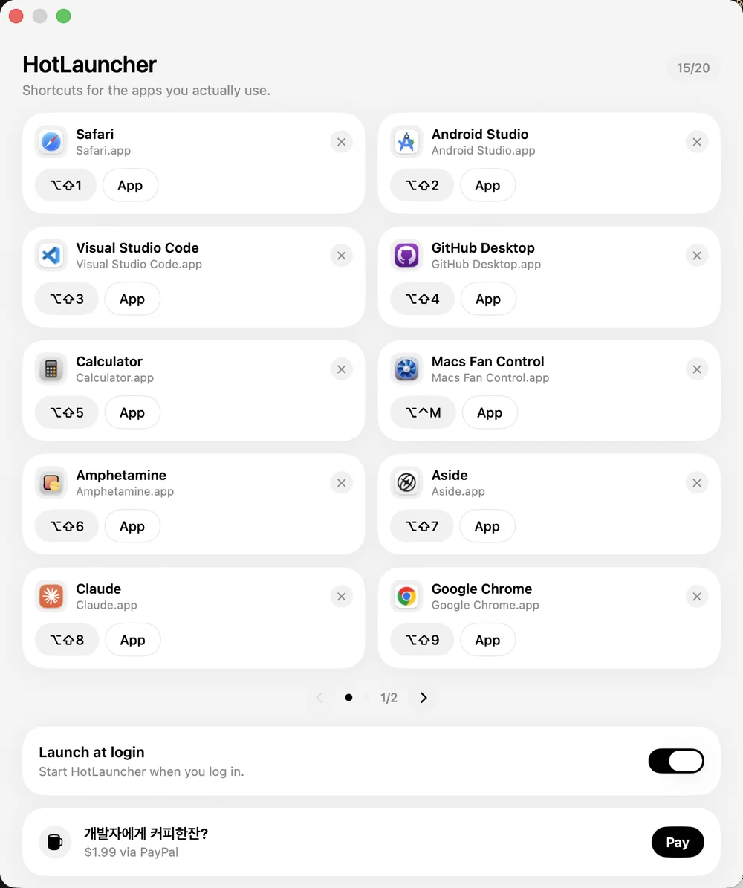

HotLauncher
자주 쓰는 Mac 앱을 최대 20개까지 전역 단축키에 하나씩 붙여 두고, 키를 누르면 바로 여는 메뉴바 앱입니다. 무료이고 소스가 공개돼 있습니다.
macOS 26(Tahoe)에서 Launchpad가 빠지고 Spotlight 안의 Apps 런처가 그 자리를 대신합니다. 아이콘을 원하는 자리에 둘 수 없고, 앱을 켜려면 검색 결과를 기다릴 때가 많습니다. HotLauncher는 그 화면을 거치지 않습니다.
macOS 26 이상, Apple Silicon Mac에서 동작합니다. 아직 Apple 공증 전이라 앱 파일은 배포하지 않고, 소스에서 빌드해 설치합니다.

하는 일
단축키로 앱 열기
다른 앱을 쓰는 중에도 지정한 키를 누르면 그 앱이 열립니다. 검색이나 인덱싱은 하지 않습니다.
슬롯 20개
한 화면에 10개(2열 5줄)씩, 2페이지에 나눠 배치합니다.
메뉴바에만 상주
독 아이콘이 없습니다. 메뉴바의 Settings에서 앱과 키를 고릅니다.
로그인 시 자동 실행
켜 두면 시스템 로그인 항목에 등록돼 부팅 후 메뉴바에 올라옵니다.
네트워크를 쓰지 않음
설정은 이 Mac 안의 JSON 파일에 저장합니다. 네트워크는 기부 링크를 누를 때만 씁니다.
설치
macOS 26, Swift 6.3, Xcode Command Line Tools가 필요합니다. 터미널에서 아래 네 줄을 실행하면 Applications 폴더에 HotLauncher가 설치됩니다.
git clone https://github.com/Hwemo-Chung/HotLauncher.git
cd HotLauncher/HotLauncher
bash scripts/bundle.sh
bash scripts/install.sh지금은 adhoc 서명이라 시스템 평가(spctl) 결과가 rejected로 나옵니다. 빌드한 앱을 다른 Mac에 복사하면 Gatekeeper가 막을 수 있으니, 쓰실 Mac에서 직접 빌드해 주십시오.
자주 묻는 질문
런치패드는 어디로 갔나요?
macOS 26 Tahoe에서 없어졌고, Spotlight의 Apps가 대신합니다. HotLauncher는 아이콘 격자를 되살리지 않고, 자주 여는 앱에 단축키를 붙입니다.
Alfred나 Raycast를 쓰는데요?
그렇다면 이 앱이 필요 없을 수도 있습니다. 런처 창 없이 앱 20개만 키에 붙여 두고 싶을 때 쓰는 앱입니다.
왜 다운로드 파일이 없나요?
Apple 공증을 받기 전의 바이너리는 사이트에 올리지 않습니다. GitHub 소스에서 빌드하면 내 Mac에서 서명한 앱이 만들어집니다.
어떤 Mac에서 되나요?
macOS 26 이상, Apple Silicon Mac입니다. macOS 26.6.2에서 테스트했습니다.
유료인가요?
앱은 무료입니다. PayPal로 $1.99를 기부할 수 있지만, 기부 여부와 기능은 관계가 없습니다.
문의
설치 문의와 버그 제보는 tolaria@naver.com으로 보내 주십시오. 소스는 GitHub의 Hwemo-Chung/HotLauncher에 있습니다.